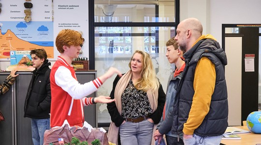
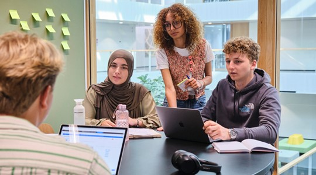
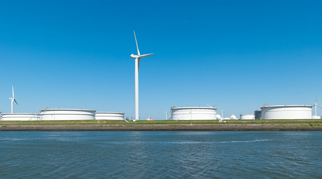

Hoe ver ben jij met je studiekeuze?
Kom naar de open dag
Bezoek onze locaties op zaterdag 8 november van 10.00 tot 14.00 uur.
Meld je aan!Studiekeuzetest
Ontdek welke bachelor- en Associate Degree-opleidingen bij jou passen en waarom dit zo is
Meld je aan!Toekomstmakers
Onze (oud)studenten laten zien hoe zij de toekomst maken. Voor zichzelf én voor een ander
Naar de toekomstmakersOntdek onze locaties
Studeren bij Hogeschool Rotterdam
Studeren in Rotterdam
Ontdek wat bij je past
Open dagen
Kom langs
Maak kennis met onze opleidingen op locatie en proef de sfeer
Bekijk meer informatie Proefstuderen
Maak kennis
Maak kennis met onze opleidingen tijdens een proefstudeerdag
Bekijk het aanbod Onze opleidingen
Vind jouw opleiding
Een overzicht van alle opleidingen van Hogeschool Rotterdam.
Bekijk alle opleidingenOnderwijstypes
Kies je voor een tweejarige Associate degree, voor een reguliere vierjarige bachelor of voor een hbo masterprogramma?
Onderwijsvormen
Bij voltijd ga je de gehele werkweek naar school. Deeltijd studeren doe je meestal naast je werk. Duaal staat ook wel bekend als werken en leren.
Toekomst maken doe je samen
Werken aan de opgaven van de Rotterdamse regio
Al lerend werk je mee aan de toekomst van de stad en de wereld om je heen. Studenten, docenten, onderzoekers en de beroepspraktijk bedenken samen oplossingen. Toepasbaarheid staat centraal. We dragen bij aan vier grote maatschappelijke opgaven.
-

Duurzame delta
Willen we over 30 jaar niet zwemmend naar de stad, dan zullen we slim en duurzaam over de toekomst van onze delta moeten nadenken.
Lees meer over dit thema -
Toekomstbestendige economie
Wat bezitten, bestellen en vervoeren we veel spullen. Kan dat ook betekenisvoller, met oog voor circulariteit?
Lees meer over dit thema -
Vitale gemeenschap
Hoe hou je de samenleving in balans? Hoe zorg je bijvoorbeeld voor gelijke kansen als het gaat om toegang tot onderwijs en zorg?
Lees meer over dit thema -
Slimme & sociale stad
Innoveren en digitaliseren is vooruitgang! Mits iedereen mee kan komen en we blijven zorgen dat de mens centraal staat.
Lees meer over dit thema
Nieuws
Een overzicht van het laatste nieuws
-
Hogeschool Rotterdam publiceert internationale primeur: veilige zorgdata met AI
13 oktober 2025
Onderzoekers, lectoren én studenten van Hogeschool Rotterdam hebben een innovatieve methode ontwikkeld die het mogelijk maakt om veilig onderzoek te doen met zorgdata. De bevindingen zijn onlangs gepubliceerd in het internationale wetenschappelijke tijdschrift Frontiers in Artificial Intelligence. Daarmee plaatst Hogeschool Rotterdam zich internationaal op de kaart als pionier in de toepassing van kunstmatige intelligentie in de zorg.
-
Minister Tieman te gast op Maritime Talent Days
11 oktober 2025
Robert Tieman, (demissionair) Minister van Infrastructuur en Waterstaat. was vrijdag te gast op de Maritime Talent Days bij ons en het STC. Tieman: "Studenten, blijf nieuwsgierig en blijf bewegen. Het water staat nooit stil en jullie carrière ook niet
-
Tien opleidingen Hogeschool Rotterdam behoren tot de beste van Nederland volgens Keuzegids hbo 2026
02 oktober 2025
Tien opleidingen van Hogeschool Rotterdam krijgen het predicaat Topopleiding in de Kuezegids hbo 2026. Drie opleidingen zijn nieuwkomers, zeven behouden hun titel. Met deze resultaten bevestigt de hogeschool opnieuw haar sterke positie in het hbo-landschap
Lees al het nieuws
Meeloopdag
Neem je laatste twijfels weg
Jouw studiekeuze
Weet jij al wat jij wilt?
Werken bij Hogeschool Rotterdam
Je bent welkom

Samenwerken met Hogeschool Rotterdam
Stages en afstudeeronderzoek